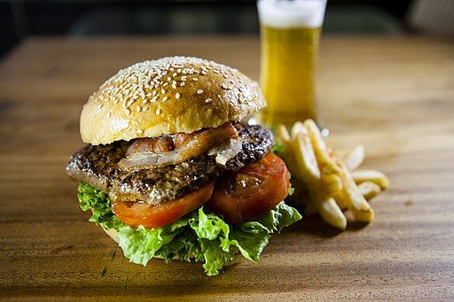

Hamburger

Description
When it's too cold to grill and you're craving a juicy burger, use your air fryer! The butter and bouillon mixture gives the patties a dark grilled color and deep beefy flavor. Add your favorite seasonings, if desired, but these are delicious as is! If you'd like to add cheese, turn off the air fryer once the patties are done and let the residual heat melt the cheese. Make sure you use cold meat, straight from the fridge, for best results.
Ingredients
- 1 pound 80% lean ground beef
- 2 tablespoons melted butter
- 1 tablespoon beef base
- freshly ground black pepper to taste
Steps
- Preheat an air fryer to 400 degrees F (195 degrees C).
- Form beef into 4 patties, approximately 3/4 inches thick and 4 1/2 inches in diameter. Make the patties slightly bigger than the buns to allow for shrinkage.
- Whisk together warm melted butter and beef soup base in a small bowl. Brush lightly onto both sides of patties and season with pepper. Set patties into the air fryer basket. Depending on the size of your air fryer, you may need to cook them in batches.
- Air-fry patties for 7 minutes, flipping halfway through, for medium doneness. For well done, air-fry for an additional 2 minutes.